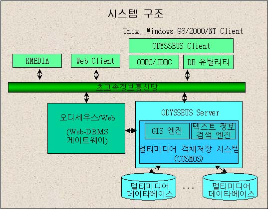

최종 목표
-
초고속 통신망 응용을 위한 다사용자 객체지향 멀티미디어 데이타베이스 관리
시스템(DBMS)
기능 및 특징
-
세계 최초의 텍스트 정보검색(IR) 시스템과 밀결합된 객체지향 멀티미디어 DBMS
-
국내 최초 개발 객체지향 DBMS (버전 1 : 1995.7)
-
ODMG-93 국제 표준 지원
-
멀티미디어 데이타베이스 기능
-
클라이언트/서버 아키텍춰 지원 (Windows 95/NT, UNIX client)
-
대용량 멀티미디어 객체 저장 시스템(COSMOS)
장착
-
객체지향 질의어 (ODMG-93 OQL + 정보검색 질의 확장)
-
객체버퍼 관리
-
멀티미디어 복합객체(Composite Object)의 효율적 관리
-
다사용자 동시 접근 기능 및 정교한 WAL 기반 파손 회복 기법

활용 분야
-
전자도서관(Digital Library)
-
인트라넷에서의 정보검색 시스템 및 멀티미디어 DBMS
-
홈 쇼핑(Home Shopping)
-
초고속정보통신망 응용을 위한 멀티미디어 정보 서버
-
하이퍼미디어 시스템을 위한 하부 모듈
-
지리정보시스템(GIS)을 위한 객체지향 DBMS
-
컴퓨터 지원 설계 및 생산(CAD/CAM) 데이타베이스 시스템
상품화 사례
-
COSMOS/IR-S : 텍스트 정보검색 엔진과 밀결합(tight coupling)된 최첨단 저장
시스템 상품 (삼성 SDS(주)의 국내 웹 사이트 검색 시스템인 Naver(구
Web Glider)에 정보검색용 저장 시스템으로 장착)
기대효과
-
국제적 신기술 확보(강제계승 방법, 비용기반 객체버퍼 교체)
-
특허 출원
-
국내 객체지향 DBMS 핵심기술 확보
-
상품화
연구진행사항 및 향후계획
-
효율적인 객체버퍼 관리 (비용기반 객체버퍼 관리)
-
GIS로 확장: 공간색인, 공간질의어, 공간객체
저장 시스템
-
객체관계형(Object-Relational) DBMS로 확장: ODBC 인터페이스,
-
멀티미디어 기능 보강: 연속 매체, 동기화
-
분산 아키텍춰 지원: 3-tier 아키텍춰, CORBA
-
고급 DBMS 기능 지원: 긴 트랜잭션, 버젼 관리, 동적 스키마 관리
|